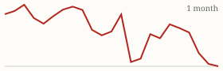
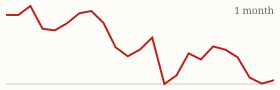

| Today's briefing for operators |
Top line: Homebuyer demand sets a record low, and sellers are softening |
|
| Thursday, November 19, 2026 | Late Edition | Curated from 63 voices on X |
|
Real Estate
Homebuyer Demand Hits a Record Low, Worse Than 2008
NAR's pending sales index fell 16.7% year over year to 63.0 in October, the weakest reading on record, Nick Gerli reports.
By @nickgerli1 |
Chart of U.S. pending home sales. Image via @nickgerli1 on X | Nick Gerli calls it a housing demand depression. Contract signings on existing homes in October 2026 were the worst in U.S. history, below any point in the 2008 downturn: 53% under the pandemic peak and 40% under pre-pandemic levels. |
His takeaway is that it's a good time to make offers, especially in high-inventory states. Look for sellers who have sat on the market 3+ months, have already cut prices, and are heading into winter. In areas forecast to keep falling, those sellers may take a real discount. |
|
| Read on X |
|
Mortgage Rates & Markets | Mortgage Rates Today's average lender rates | 30-year fixed | 7.46% | -0.02 | | 15-year fixed | 6.98% | -0.04 |
Daily change vs. prior day. Source: Mortgage News Daily, as of 11/18/2026 (updated weekdays about 4 PM ET). |
|
S&P 500 Close of Wed, Nov 18 S&P 500 7,323.63 ▼ -16.90 (-0.23%)  Yahoo Finance chart data (daily closes) |
|
Nasdaq Composite Close of Wed, Nov 18 Nasdaq Composite 24,429.88 ▲ +101.50 (+0.42%)  Yahoo Finance chart data (daily closes) |
|
| Real Estate & Deals | The townhome Naviaux bought at auction. Image via @Jacob_Naviaux on X An $800 Buy Wiped Out by a Senior Mortgage By @Jacob_Naviaux An investor bought a townhome for $800 at an HOA foreclosure but took it subject to a ~$340K senior mortgage and didn't pay it. Jacob Naviaux bought it at the lender's auction for $347,602, wiping out their ownership. Always run title for senior liens before you count the equity. Read on X |
180 Names, 2 Hours, One Great Appointment By @NickMaccini Nick Maccini pulled a very motivated list of 180 sellers, cold called it himself on a triple-line dialer, and booked a strong appointment in under two hours. A tight list beats a big, expensive one. Read on X |
Why Pre-Approvals Don't Hold Much Weight By @Jacob_Naviaux A buyer putting 20% down on a $450K flip was denied because his variable contractor income wasn't disclosed for the pre-approval. On dispo, have someone check the buyer's lender and income type early, not at the closing table. Read on X |
Take Boring All Day Long By @loganjrankin Logan Rankin wants an old building, reasonable debt, predictable cash flow and a hundred things to improve. His line: excitement is usually expensive. Read on X |
| AI Briefing | Anthropic Prices IPO at $83 a Share By @AnthropicAI Anthropic priced its IPO at $83, above its $70-$78 range, with Nasdaq trading expected to begin today under ANT. It's the most-engaged post of the day by far. Read on X |
Gemini 4 Neon announcement graphic. Image via @GoogleDeepMind on X Gemini 4 Neon Rolls Out By @GoogleDeepMind Google's new Gemini 4 Neon sits between Carbon and Hydrogen and is built for fast, frontier-level work in coding, knowledge work and science. It's live for Google AI Pro and Ultra subscribers. Read on X |
Up to 40% Off for Work That Can Wait By @OpenAIDevs OpenAI now lets developers pick a 2- or 8-hour response window on GPT-6.2 Astra and Sol to save up to 40% per token. Good for overnight batch jobs like list cleanup or reports. Read on X |
Neon: Opus-Level Coding at Half the Cost By @gregisenberg Greg Isenberg tested Gemini 4 Neon early: about the same as Opus 5.5 on coding for roughly half the cost per task. If you run agents all day, that price gap adds up. Read on X |
Agents Now Finish Twice as Much Research Work By @OpenAI OpenAI shared data on how its researchers use AI. Per @kimmonismus's read of it, agents now finish 46% of 2-4 hour research tasks with no human help, up from 23% in March. Read on X |
10 Power Words for Learning Anything By @Sabrina_Ramonov Sabrina Ramonov's prompt trick: type a format word like "isometric diorama" plus your topic into ChatGPT to get a visual explainer. Handy for training new hires on a process. Read on X |
| Business & Leadership | Well-Meaning Advice Can Still Be Poison By @danmartell Dan Martell: an enemy who sabotages you on purpose won't hurt you; a friend who gives you bad advice by accident might. Weigh advice by the track record behind it, not the intent. Read on X |
Your Team Matters More Than You Think By @PeterDiamandis Peter Diamandis's advice for founders: your team matters more than you can imagine. Read on X |
Don't Refill the Hour AI Gives Back By @PeterDiamandis Diamandis: if AI gives you an hour back, you don't have to fill it with more work. Use the time on what matters to you. Read on X |
|
The Hyre Times is compiled each morning by Groky from public posts on X plus public rate and market data. Summaries reflect the authors' own claims and have not been independently verified. Not financial advice. © 2026 Hyre Times. |
|